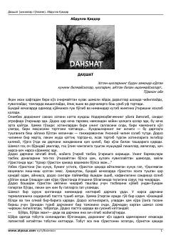

ДO'tmish illatlari va insoniylik fojiasi tasvirlangan mashhur o'zbek hikoyasi.
Abdulla Qahhorning ushbu mashhur hikoyasida o'tmishdagi ijtimoiy muhit, xotin-qizlarning og'ir qismati va diniy-afsonaviy qo'rquvlar mahorat bilan tasvirlangan. Asar bosh qahramoni Unsinoyning qo'rquvni yengib, o'z erkinligi uchun kurashishi fojiali voqealar fonida ochib beriladi. Yozuvchi inson ruhiyatidagi ziddiyatlarni o'tkir hajv va realistik detallar orqali ko'rsatib beradi.